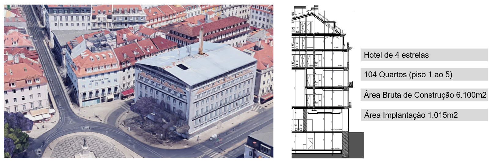
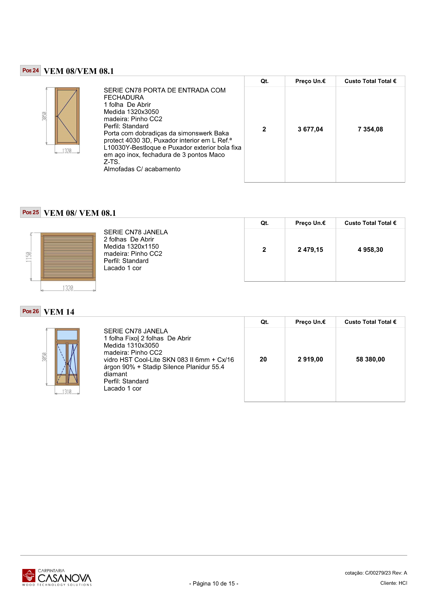

Responder a todos os pedidos,
não só aos que dá tempo.
Um sistema que lê os pedidos de orçamento que chegam por email, tira dos mapas e dos desenhos as quantidades, dimensões, ferragens, vidros e acabamentos, e devolve o vosso Excel preenchido, pronto a rever. Construído em cima dos três pedidos reais que o Carlos nos enviou.
Não falta procura. Falta capacidade de resposta.
Pedidos todos os dias
Entre 5 e 15 pedidos por dia chegam por email, de empreiteiros e donos de obra. Cada um traz mapa de quantidades, mapa de vãos ou de armários, alçados e pormenores.
A triagem decide
Como não dá para orçamentar tudo, o Carlos escolhe os que parecem ter mais hipóteses de fechar. Com o risco de deixar passar a obra certa.
Excel e Lógico
O cálculo faz-se no vosso Excel com Visual Basic e, nas janelas, também no Lógico, o software ligado à produção. Cada vão é transcrito à mão do mapa para a folha.
Duas áreas, dois mundos
Caixilharia em madeira: vãos, madeiras, vidros, ferragens. Carpintaria de interiores: cozinhas, armários, portas, painéis. Cada uma com a sua forma de calcular.
O tempo vai na transcrição
A experiência do orçamentista está nas decisões: que madeira, que margem, que risco. O resto é passar números de um documento para outro.
O objetivo
Numa fase de investimento e crescimento, responder a mais pedidos significa mais obras ganhas e mais margem para escolher as melhores.
Com um único projeto adicional ganho por ano, o investimento fica pago várias vezes.
Os três pedidos que nos enviaram, já abertos e lidos
Dois com a vossa resposta (para comparar) e um ainda por responder (para testarmos juntos). Tudo o que vem a seguir foi feito com estes ficheiros.
O mapa que chegou por email, lido vão a vão
O mapa de caixilharia em Excel da Baltor: 5 artigos, 20 referências de vão, 80 unidades. As madeiras, os vidros, as cores e as ferragens não estão em colunas, estão no texto de cada artigo. O sistema lê esse texto e passa-o para cada vão. Clique num vão.
| Art. | Vão | Medidas (m) | Qtd | Leitura |
|---|
Do texto do artigo às linhas do vosso Excel
O que hoje é feito à mão na folha DADOS do ORC019-26: referência na coluna G, quantidade em H, tipo em I, alturas em J e K, largura em L. Bandeiras numa linha à parte, com o sufixo -1, como vocês fazem.
| G · ref. | H · qtd | I · tipo | J · alt. | L · larg. | Origem |
|---|---|---|---|---|---|
| Vce01 | 1 | 124 porta | 1600 | 1070 | mapa + pormenor |
| Vce02 | 1 | 2 folhas | 1080 | 1330 | mapa |
| Vce03 | 2 | 2 folhas | 1740 | 1070 | mapa |
| Vce03-1 | 2 | 18 fixo | curva | 1070 | bandeira, do pormenor |
| Vce04 | 3 | 2 folhas | 1920 | 1080 | mapa |
| Vce010 | 21 | 2 folhas + bandeira | 2720 | 1210 | intervalo desdobrado |
| Vce010A | 3 | 2 folhas + bandeira | 2560 a 2720 | 1150 a 1210 | confirmar em obra |
| Vce019 | 6 | 1 folha | 2140 | 890 | mapa diz 0,80: ver pormenor |
| Vce05, Vce06 | 2 | recuperar | 3810 | 1980 | não é fabrico novo |
| + 17 linhas · opções gerais: madeira, acabamento, vidro, ferragem | |||||
A proposta que enviaram à Baltor, sem transcrever um vão
Com a folha DADOS preenchida, o cálculo é o vosso: a mesma macro, a mesma tabela de preços, as mesmas regras. Os preços abaixo são os da vossa proposta PE019-26, a referência contra a qual o sistema é validado.
| Vão | Medida e tipo | Qtd | Unitário | Total |
|---|---|---|---|---|
| Vce.01 | 1600x1070 · porta 1 folha opaca + postigo fixo | 1 | 2.402,59 € | 2.402,59 € |
| Vce.02 | 1080x1330 · janela 2 folhas | 1 | 1.321,37 € | 1.321,37 € |
| Vce.03 | 1740x1070 · 2 folhas + bandeira fixa curva | 2 | 2.095,88 € | 4.191,76 € |
| Vce.04 | 1920x1080 | 3 | 2.635,73 € | 7.907,19 € |
| Vce.07 | 2540x1330 · com bandeira | 1 | 2.689,96 € | 2.689,96 € |
| Vce.10 | 2720x1210 · com bandeira decorativa | 21 | 4.495,65 € | 94.408,65 € |
| Vce.10A | variante de medida | 3 | 4.415,93 € | 13.247,79 € |
| Vce.11 | com bandeira | 6 | 2.818,65 € | 16.911,90 € |
| Vce.14 | 2540x1110 | 3 | 2.463,39 € | 7.390,17 € |
| Vce.17 | 2500x1330 | 8 | 2.661,36 € | 21.290,88 € |
| Vce.18 | 2560x1100 · almofada inferior | 4 | 2.719,69 € | 10.878,76 € |
| Vce.19 | 2140x890 · 1 folha | 6 | 1.462,01 € | 8.772,06 € |
| Vce.20 | 2140x890 · 1 folha | 2 | 1.462,01 € | 2.924,02 € |
| Vce.12 | 1240x890 | 8 | 1.262,38 € | 10.099,04 € |
| Vce.13 | 1240x890 | 2 | 1.262,38 € | 2.524,76 € |
| Vce.15 | 2000x890 · sacada | 4 | 1.794,87 € | 7.179,48 € |
| Vce.16 | 2000x890 · sacada | 1 | 1.794,87 € | 1.794,87 € |
| Vce.09 | 2250x1070 · porta | 1 | 2.549,92 € | 2.549,92 € |
| Montagem | Transporte e aplicação de 77 vãos | vg | 30.500,00 € | |
| Total sem IVA | 248.985,17 € | |||
77 de 80
Vãos que entram no preço. Os outros 3 (2 a recuperar e o Vce.08) ficam listados à parte, como na vossa proposta.
O preço é vosso
O sistema não inventa preços: preenche os dados e o vosso Excel calcula. Se mudarem a tabela, o resultado muda com ela.
As condições também
Pagamento 40/50/10, prazo de 18 a 24 semanas, validade de 15 dias, exclusões: o texto sai do vosso modelo de proposta.
382 unidades em 13 artigos, lidas sem abrir o Lógico
Reabilitação de um conjunto de edifícios na Praça Duque da Terceira: hotel de 4 estrelas, 104 quartos. O mapa da HCI tem as quantidades na coluna das unidades (vêm trocadas) e as especificações num texto longo por artigo. O sistema endireita as colunas e separa o que é janela do que é portada.

Da linha do mapa à posição da vossa proposta
A proposta PE125-26 tem 37 posições, cada uma com o desenho do vão, a série, a madeira, o vidro e o preço. O sistema prepara essa lista e deteta o que mudou entre o pedido e a proposta.
| Pos | Ref. | Medida | Qt | Unitário | Total |
|---|---|---|---|---|---|
| 1 | VEM 01 | 2100x3230 · CN68 | 2 | 4.650,95 | 9.301,90 |
| 19 | VEM 09 | 2210x4460 · CN78 | 2 | 6.480,45 | 12.960,90 |
| 22 | VEM 12 | 2210x4040 · porta 2 folhas | 1 | 10.630,35 | 10.630,35 |
| 26 | VEM 14 | 1310x3050 · fixo + 2 folhas | 20 | 2.919,00 | 58.380,00 |
| 29 | VEM 16 | 1320x2100 | 28 | 2.048,12 | 57.347,36 |
| 32 | VEM 17 | 1320x1940 · quadrícula | 28 | 2.342,04 | 65.577,12 |
| 36 | VEM 20 | Ø920 · pivotante | 16 | 2.697,50 | 43.160,00 |
| 37 | Montagem | transporte e aplicação | 1 | 96.700,00 | 96.700,00 |
| Total sem IVA, 37 posições | 673.549,76 € | ||||

Foram estas três as diferenças entre o pedido da HCI e a proposta enviada. É este tipo de conferência que o sistema faz sempre, antes de a proposta sair.
Um pedido novo: 42 desenhos e um MQT, lidos antes de vocês
O pedido que o Carlos nos reencaminhou sem resposta, para compararmos com o orçamento que a Casanova vai fazer. Prazo da ICON: 9 de outubro. Isto é o que o sistema tirou dos desenhos e do mapa de quantidades.
Cada móvel e cada porta, com medidas, materiais e ferragens
A verde, o que bate certo entre o MQT e os desenhos. A amarelo, o que diverge e precisa de decisão ou de pergunta à ICON.
| Ref. | Descrição | Medidas (L x A x P) | Qtd | Materiais e ferragens | Estado |
|---|---|---|---|---|---|
| ARM-01 | Roupeiro | 1,50 x 2,45 x 0,60 | 6 | MDF 19 lacado RAL 9010, interior melamina linho, Häfele | MQT = desenho |
| ARM-02 | Roupeiro | 1,90 x 2,45 x 0,60 | 5 | idem | MQT = desenho |
| ARM-03 | Roupeiro | 2,00 x 2,45 x 0,60 | 4 | idem | MQT = desenho |
| ARM-04 | Roupeiro | 1,80 x 2,45 x 0,60 | 3 | idem | MQT = desenho |
| ARM-05 a 10 | Roupeiros (8 variantes) | 1,20 a 3,00 x 2,40 a 2,45 x 0,60 | 10 | idem; puxador: cava no MQT, Häfele no desenho | puxador a confirmar |
| VI-01 | Porta de entrada 37 dB, branca por dentro, preta por fora | 0,90 x 2,20 | 10 | JNF; fechadura eletrónica do cliente | espessura 50 ou 55 mm |
| VI-02 | Porta de batente lacada RAL 9010 | 0,80 x 2,20 | 21 | JNF | 1 variante pocket no mapa |
| VI-03, 05, 06 | Portas de correr pocket | 0,80 x 2,20 e 2,45 | 17 | JNF | MQT = desenho |
| VI-04 | Porta pivotante sem aro | 0,76 x 2,20 | 3 | JNF | MQT = desenho |
| VI-07 | Porta corta-fogo metálica | 1 | serralharia | não é carpintaria | |
| ARM.TEC / TE | Armários técnicos | cotas nos desenhos | 22 | MDF termolaminado carvalho, abertura push | 14 sem desenho; MDF no MQT |
| ARMTE | Armários do quadro elétrico | cotas nos desenhos | 6 | termolaminado carvalho | MQT = desenho |
| LAV-01 / 02 | Móveis de lavatório, 2 gavetas, tampo HIMACS | cotas nos desenhos | 17 | MDF hidrófugo folheado carvalho | interior: lacado preto ou melamina |
| PR-01 / 02 | Painéis ripados 20x30, afastamento 30 | parede inteira | 3 | OSB hidrófugo, Sonae M4451 | PR-01: MQT 2, desenho 1 |
| Rodapé | MDF lacado RAL 9010, 5 cm | 293,72 ml | inclui cozinhas? | ||
| CZ-01 a 05 | Cozinhas e bancadas | desenhadas | ? | lacado RAL 9010 + M4451, Häfele | não estão no MQT |
As perguntas que vale a pena fazer à ICON, já escritas
Um orçamentista experiente encontra estas diferenças ao fim de horas de desenho. Aqui vêm na primeira leitura, com o sítio de onde saíram. Seguem num email para o Carlos rever e enviar.
O caminho de um pedido, sem ninguém transcrever nada
O pedido chega ao email de sempre. O sistema faz a leitura e o preenchimento; o orçamentista revê, decide e envia.
Todos os pedidos numa lista, já com a ficha feita
Em vez de abrir email a email, a triagem faz-se aqui. Cada pedido já vem lido: o que é, quanto vale de trabalho, até quando. Clique num pedido.
Pedidos por responder
ICON Sailor, Barra · ficha do pedido
Tabela de preços · caixilharia
O sistema transcreve. A Casanova decide.
O que o sistema faz
- Lê o email e todos os anexos, mesmo os que chegam em ZIP ou por link
- Identifica cada vão, móvel ou porta, com referência e quantidade
- Tira dimensões, madeira, vidro, ferragens e acabamento do mapa e das notas
- Preenche o vosso Excel de cálculo, linha a linha, com a vossa tabela de preços
- Faz a ficha de triagem com prazo, área e volume estimado
- Escreve a lista de pedidos de esclarecimento ao empreiteiro
- Compara com orçamentos anteriores parecidos
O que fica sempre com a equipa
- Decidir a que pedidos se responde
- Escolher a solução técnica quando o mapa deixa margem
- Definir a margem e o preço final
- Validar cada linha marcada a amarelo
- Enviar a proposta ao cliente
- Atualizar a tabela de preços quando os fornecedores mudam
Nunca erra em silêncio: o que o sistema não sabe com certeza fica sinalizado, com o sítio de onde veio.
Encaixa no que já usam, sem mudar de ferramentas
O vosso email
Liga-se à caixa onde os pedidos já chegam. Os empreiteiros não mudam nada.
O vosso Excel
O resultado é o vosso ficheiro de cálculo, com as vossas fórmulas e a vossa macro. A proposta continua a sair como hoje.
O Lógico
Nas janelas, a lista de vãos pode sair num formato para importar no Lógico. O que o Lógico aceita importar confirma-se no arranque.
Desenhos
PDF, Excel e Word leem-se diretamente. DWF e DWG convertem-se no servidor, como já fazemos para outros projetos de construção.
Dados vossos
Alojamento na União Europeia, acessos por pessoa, os ficheiros dos clientes não são usados para treinar modelos.
Aprende com o histórico
Os orçamentos que já fizeram servem de referência: preços usados, soluções escolhidas, obras ganhas e perdidas.
Duas etapas e um módulo opcional, testados com pedidos vossos
Começamos pelo que já está provado com os vossos ficheiros: a caixilharia, depois os interiores. A gestão de pedidos na vossa caixa de email junta-se se fizer sentido para vocês.
Do mapa à folha DADOS
- Leitura de mapas em Excel e PDF
- Folha DADOS do vosso modelo preenchida
- Bandeiras, intervalos de medida e exclusões
- Conferência do pedido contra a proposta
- Exportação para o Lógico, se o Lógico a aceitar
Do MQT e dos desenhos ao levantamento
- Tabela de preços de interiores, montada convosco
- Roupeiros, cozinhas, portas, painéis, rodapés
- Cruzamento MQT com desenhos
- Pedidos de esclarecimento ao empreiteiro
- Formação da equipa
Módulo de gestão de pedidos
- Ligação ao email onde os pedidos chegam
- Caixa de pedidos com ficha de triagem
- Prazos e volume de cada pedido à vista
- Histórico de orçamentos e preços
Investimento
- Implementação, etapas 1 e 25.000 €
- Módulo de gestão de pedidos (opcional)+ 1.000 €
- Os vossos ficheiros e preços ficam vossos
- Sem custos por utilizador
Quanto vale responder a mais pedidos?
Mexa nos valores. Os de partida são os que nos deram na reunião.